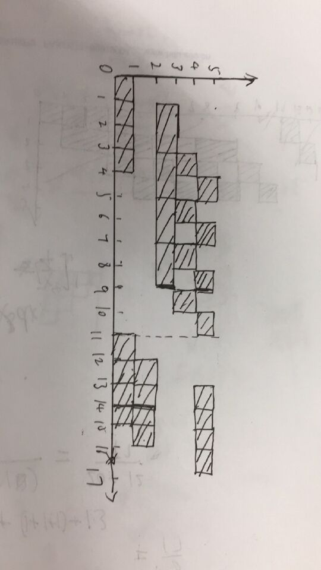

系统结构的部分课后作业，因为需要写成电子版，故稍微整理下也放入到博客中，方便你我他。答案是自己组织的，不保证一定正确。
书是张晨曦的《计算机系统结构（第2版）》
第一章
1
翻译技术是先把 L+1 级程序全部变换成 L 级程序后，再去执行新产生的 L 级程序，在执行过程中 L+1 级程序不再被访问。
解释技术是每当一条 L+1 级指令被译码后，就直接去执行一串等效的 L 级指令，然后再去取下一条 L+1 级指令，以此重复进行。
计算机系统结构是程序员所看到的计算机属性，即概念性结构与功能特性。
Amdahl定律：加快某部件执行速度所能获得的系统性能加速比，受限于该部件的执行时间占系统中总执行时间的百分比。
程序的局部性原理是指程序执行时所访问的存储器地址不是随机的，而是相对簇聚。局部性原理又表现为：时间局部性和空间局部性。
时间局部性是指如果程序中的某条指令一旦执行，则不久之后该指令可能再次被执行；如果某数据被访问，则不久之后该数据可能再次被访问。
空间局部性是指一旦程序访问了某个存储单元，则不久之后。其附近的存储单元也将被访问。
CPI(Cycles Per Instruction，每天指令的周期数) CPI = 执行程序所需要的时钟时间 / 执行指令个数。
模拟是指用软件的方法在一台现有的计算机（宿主机host）上实现另一台计算机（虚拟机VM）的指令集。
仿真是指用一台计算机（宿主机host）上的微程序去解释实现另一台计算机（目标机）的指令集。
3
Flynn分类法是按照指令流和数据流的多倍性进行分类的。
Flynn分类法把计算机系统结构分为以下4类：
- 单指令流单数据流（SISD）
- 单指令流多数据流（SIMD）
- 多指令流单数据流（MISD）
- 多指令流多数据流（MIMD）
4
计算机系统设计经常使用的4个定量原理
- 以经常性事件为重点，按照对经常性情况采用优化方法的原则，能得到更多整体上的改进。
- Amdahl定律，加快某部件执行速度所能获得的系统性能加速比，受限于该部件的执行时间占系统中总执行时间的百分比。
- CPU性能公式，
CPU时间 = 时钟周期时间 x CPI x IC，只要改进任何一个参数都能提高CPU性能 - 程序的局部性原理，程序执行时所访问的存储器地址不是随机的，而是相对簇聚。
6
执行时间 = 0.000575(s)
CPI =(45000 + 750000 2 + 8000 4+ 1500 * 2) / （45000 + 75000 + 8000 + 1500）~= 1.776(s)
MIPS = 400Mhz / (CPI * 10^6) ~= 225.217
执行时间 = 总时钟周期时间数 * 平均周期时间 = 0.000575(s)
8
- 加速比= 1/((0.9-x)+0.3/30+0.3/20+x/10)=10 x=0.361
- 加速比=1/(0.2+0.3/30+0.2/20+0.2/10)=1/0.245 比例=0.2 * 加速比 ~= 0.816
第二章
1
CISC Complex Instruction Set Computer 复杂指令集计算机
复杂指令集计算机的设计策略是使用大量的指令，包括复杂指令。与其他设计相比，在CISC中进行程序设计要比在其他设计中容易，因为每一项简单或复杂的任务都有一条对应的指令。程序设计者不需要写一大堆指令去完成一项复杂的任务。 但指令集的复杂性使得CPU和控制单元的电路非常复杂。
RISC Reduced Instruction Set Computer 精简指令集计算机
精简指令集计算机是一种执行较少类型计算机指令的微处理器。它能够以更快的速度执行操作（每秒执行更多百万条指令，即MIPS）。因为计算机执行每个指令类型都需要额外的晶体管和电路元件，计算机指令集越大就会使微处理器更复杂，执行操作也会更慢。
数据表示(data representation) 是指计算机硬件能够直接识别和指令集可以直接调用的数据类型。
2
区分指令集结构的主要因素：寻址方式，数据表示，指令格式。
根据该因素可将指令集结构分为以下三类：
- 寄存器-寄存器类型(R-R)
- 寄存器-存储器类型(R-M）
- 存储器-存储器类型(M-M)
4
指令集应满足的基本要求：完备性，规整性，高效性，兼容性
5
指令集结构设计所涉及的内容有指令功能设计，数据表示，寻址方式，指令格式
9
表示寻址方式的主要方法有2种：
- 把寻址方式编码于操作码中，操作码在描述指令功能的同时也描述了相应的寻址方式，这缩短了指令长度，译码快，但增加了指令的条数和多样性，也增加了CPU对指令译码的难度。
- 把寻址方式跟操作码分离，为每个操作数设置一个地址描述符，由地址描述符表示相应操作数的寻址方式，这扩大了寻址的范围，但增大了指令长度。这种方式译码较慢，但操作码和寻址互相独立，易于扩展。
10
体系结构中常用的指令格式有变长编码格式，定长编码格式，混合编码格式。
分别是考虑目标代码的大小，性能，和兼顾两者。
第三章
1
流水线：把一个重复的过程分解为若干个子过程，每个子过程由专门的功能部件实现。把多个处理过程在时间上错开，依次通过各功能段，这样每个子过程及其功能部件可以与其他子过程并行进行。
流水线的特点：
- 把大的处理功能分解为多个独立的功能部件，依靠他们的并行工作来缩短程序的执行时间
- 流水线中的各段的时间尽可能相等，否则会引起流水线的阻塞、断流，因为时间长的段会成为流水线的瓶颈
- 流水线每个功能部件后面都要有一个锁存器，作用是在相邻两段传送数据，保证后面要用到的数据，并把各段处理的工作隔离
- 适用于大量重复的时序过程，只有在输入不断地提供任务，才能充分发挥效率
- 流水线需要通过时间跟排空时间。
流水线的分类：
- 单功能流水线，多功能流水线
- 静态流水线，动态流水线
- 部件级流水线，处理机级流水线，处理机间流水线
- 线性流水线，非线性流水线
- 顺序流水线，乱序流水线
吞吐率ThroughPut是指单位时间内流水线所完成的任务数量或输出结果的数量。
流水线加速比Speedup是指完成同一批任务，不使用流水线与使用流水线所用时间之比。
流水线的效率Efficiency是指流水线中的设备实际使用时间与整个运行时间比值，即流水线设备的利用率。
名相关是指某两条指令使用相同的名，但是它们之间没有数据流动。
定向技术：在某条指令产生计算结果之前，其他指令并不真正理解需要该计算结果，如果能够将该计算结果从其产生的地方直接送到其他指令需要它的地方，那么就可以避免停顿。
链接技术是指具有先写后读相关的两条指令，在不出现功能部件冲突 和源向量冲突的情况下，可以把功能部件链接起来进行流水处理，以达到加快执行的目的。
分段开采技术：当向量长度大于向量寄存器长度时，必须把长向量分成长度固定的段，然后循环分段处理 ，每次循环只处理一个向量段。
3
解决流水线瓶颈问题通常有两种方法：细分瓶颈段，重复设置瓶颈段
4
减少分支延迟的静态方法：预测分支失败；预测分支成功；延迟分支。
7
3种向量处理方式：
- 横向处理方式：向量长度为N时，则相当于N次循环，使用流水线时，在每次循环会出现数据相关和功能转换的问题，所以不适合流水线处理。
- 纵向处理方式：将整个向量按相同的运算符处理完后，再去进行别的运算。无论N多大，相同运算都用一条向量指令完成。因此需要采用存储器-存储器结构流水线。
- 纵横处理方式：结合以上两种，它把向量分成若干组，组内用纵向处理方式，依次处理各组。可以设置能快速访问的向量寄存器，用于存放源向量、目的向量、中间结果，构成了寄存器-寄存器结构流水线。
9
1)
TP = 10 / (50 + 50 + (10-1) * 200) = 1/220
E = (10 (50 + 50 + 100 + 200)) / ((50 + 50 + 200 + (10 – 1) 200) * 4) = 5/11
2)
该流水线的瓶颈在第四段。分别采用细分瓶颈段和重复设置瓶颈段。
两种的吞吐率和效率相同
TP = 10 / (50 + 50 + 100 + 100 + 100 + (10 – 1) * 100) = 1/130
E = 10 400 / (1300 5) = 8/13
11
TP = 8 / ((1+2+1+1) + 23 + (1+1+1) + 1 3) = 8 / 17
S = 4 (1+2+1+1) + 4 (1+1+1) / 17 = 32/17
E = S/TP = 1/4
